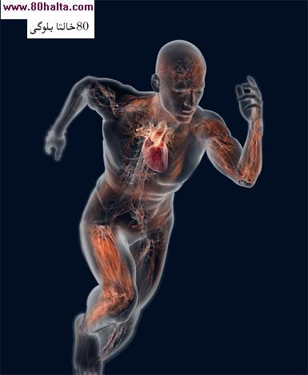

ئالدىنقى يازما
ئالدىنقى يازما كېيىنكى يازما
كېيىنكى يازما
كۈچلۈك ھەركەت ئەرلەرنىڭ كۈچ-قۇۋۋىتىنى ھەسسىلەپ ئاشۇرىدۇ
ئاپتور:Birzat ۋاقتى:2010-06-10



تور بېتىمىزدە خىلىدىن بىرى ساغلاملىق ۋە جىنسىيەت ھەققىدە گەپ بولغاندا ئەرلەرنىڭ جىنسىي قۇۋۋىتىنى ئاسىراش ۋە كۈچەيتىشتە مۇناسىۋەتلىك دورا ۋە ئوزۇقلۇقلاردىن باشقا بەدەن چىنىقتۇرۇش، كۆپ ھەركەت قىلىشنى كۈچەپ تەشەببۇس قىلىپ كىلىۋاتىمىز. ئولتۇرۇش ۋاقتى ئۇزۇن بولغان 78 نەپەر ئوتتۇرا ياشلىق ئەرلەر ئۈستىدە ئىلىپ بىرىلغان بىر تەتقىقاتتا كۆرسىتىلىشچە، جىنسىي ھەۋەسنى كۈچەيتىشتە، بەدەندىن تەر چىققۇدەك كۈچلۈك ھەرىكەتنىڭ ئۈنۈمى خىلىلا زور ئىكەن. كالىفورنىيە ئۇنۋېرسىتېتىنىڭ سانتىياگو تارماق مەكتىپىدىكى تەتقىقات خادىملىرى تېنى ساغلام ، ئوتتۇرچە يېشى 48 ياش ئەتراپىدا، جىنسىي تۇرمۇشى ئادەتتىكىچە بولغان بىر توپ ئەرلەرنى يېغىپ ئۇلارغا توققۇز ئايلىق تەنىھەركەت مەشىقى ئورۇنلاشتۇرغان. دەرىس ئالتىنجى ئايغا بارغاندا ھەربىر ئادەم ھەر ھەپتىدە ئاز دېگەندە ئۈچ قېتىمدىن، ھەر قېتىمدا بىر سائەتتىن ئوكسىگىنلىق ھەرىكەت قىلالايدىغان بولۇپ ، يۈرەكتىكى ئەڭ يۇقۇرى ئوكسىگېن مىقدارىنى 75~80 پىرسەنتكە يەتكۈزگەن. ئۇلار يەنە تېنى ساغلام ئۇزاق ئولتۇرۇپ خىزمەت قىلىدىغان 17 نەپەر ئوخشاش ياشتىكى ئوتتۇرا ياشلىق ئەرلەرنى يېغىپ ، يۇقۇرقىلارغا سىلىشتۇرما گورۇپپا قىلىپ ئورۇنلاشتۇرغان. ئۇلار ھەر ھەپتىدە تۆت قېتىمدىن ھەر قېتىمدا بىر سائەتتىن پىيادە مېڭىپ ھەرىكەت قىلغان. ھەر ئىككى گورۇپپىدىكى تەجىربە ئوبيېكتلىرى تەجىربىنىڭ بىرىنجى ئېيىدىن باشلاپ تۇرمۇشىدىكى جىنسىي تۇرمۇشنى ئۆز ئىچىگە ئالغان بارلىق ئۇششاق-چۈششەك ئىشلارنى تاكى تەلىم-تەربىيە ئاياغلاشقانغا قەدەر خاتىرلەپ ماڭغان. توققۇز ئايدىن كىيىن ، كۈچلۈك ھەركەت تەلىم -تەربيسى ئالغان بۇ ئەرلەرنىڭ ئومومىي ساغلاملىقى 30 پىرسەنت ئەتراپىدا ياخشىلانغان. بۇ ئالدىن مۆلچەرلەنگەن نەتىجە بىلەن ئوخشاش چىققان. تۈرلۈك تەكشۈرۈشلەر نەتىجىسىدە ، يەنە ئۇلارنىڭ جىنسىي تۇرمۇشىدىمۇ نۇرغۇن ئۆزگىرىشلەر بارلىققا كەلگەن. جىنسىي ئالاقە قېتىم سانى 30 پىرسەنت كۆپىيىپ ، ھەر ھەپتىدە ئۈچ قېتىمغا يەتكەن، جىنسىي يۇقۇرى پەللىگە يېتىش قېتىم سانى 26 پىرسەنت ئاشقان. شۇنىڭ بىلەن بىر ۋاقىتتا ئۇلارنىڭ جىنسىي تۇرمۇشتىكى رازىمەنلىك دەرىجىسى زور دەرىجىدە ئاشقان، زەكەر ئاسانلىقچە قايىم بولماسلىق، قاتقان ۋاقتى ئۇزۇن داۋاملاشماسلىق قاتارلىق نۇرمالسىز ئەھۋاللار زور دەرىجىدە ئازايغان . دېمەك، بۇ بىر مەزگىل بەدەن چىنىقتۇرغان بۇ ئوتتۇرا ياشلىق ئەرلەر يەنە ئۆزلىرىنىڭ ئەسلىدىكى جىنسىي ھەۋىسىنى تېپىۋالغان. تەتقىقاتتا يەنە مەلۇم بولىشىچە، پىيادە مېڭىپ ھەرىكەت قىلغان يەنە بىر گورۇپپا ئەرلەرنىڭ ساغلاملىق دەرىجىسى ئاران ئۈچ پىرسەنتلا ياخشىلانغان، بۇ ئالدىنقى گورۇپپىدىكى ئەرلەرنىڭ 30 پىرسەنتلىك ياخشىلىنىش سەۋيىسىدىن خىلىلا تۆۋەن تۇرىدۇ. ئەمما، كۈچلۈك ھەرىكەت قىلغانلارغا ئوخشاشلا ، پىيادە ماڭغۇچىلارمۇ بەدىنىدىكى نۇرمال خولېستېرىن مىقدارىنى ساقلاپ، تەشۋىش-ئەندىشىنى يوقىتىش مەقسىتىگە يېتىپ، جىنسىي جەھەتتىكى ئوي-پىكىرلىرىنى كۈچەيتىپ، جىنسىي ھەۋىسىنى تېخىمۇ ئۇرغۇتقان. پايدىلانغان ماتېريال: ئەر-خوتۇنچىلىق بىلىملىرى

 يازما مەنبەسى: بېكەت ئەسىرى
يازما مەنبەسى: بېكەت ئەسىرى خەتكۈش:
خەتكۈش:  مۇناسىۋەتلىك يازمىلار:
مۇناسىۋەتلىك يازمىلار:
ئىنكاس: 0 | نەقىل: 0 | كۆرۈلگىنى: -
ئىنكاس يوللاش